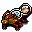

時計仕掛けのゴキブリ Clockroach
英語版 CrawlWiki の記事「Clockroach」(0.34 向け、2026-01-30 版)の翻訳です。原文の著者は編集履歴をご覧ください。
節足動物の一覧は節足動物の一覧を参照。
| 時計仕掛けのゴキブリ B  | |
|---|---|
| HP | 7-15 |
| HD | 1 |
| XP | 36 |
| 速度 | 12 |
| AC | 3 |
| EV | 10 |
| 意志力 | 20 |
| 攻撃1 | 4(噛みつき: 通常)
|
| 耐性 | なし |
| 弱点 | 毒 |
| 生息地 | 陸上 |
| 知能 | 動物並み |
| 使用 | 何も使わない |
| 分類 | 生物 |
| 体格 | とても小さい |
| 種類 | 時計仕掛けのゴキブリ、時計仕掛けのゴキブリ |
| フラグ | 守護 骨格なし |

| ありふれたダンジョンの害虫で、腐肉を漁る昆虫と迫りくる締め切りの最悪の特徴を兼ね備えている。
その周囲では時間が奇妙に流れており、受けた傷はすべて巻き戻されてしまう。ただし、傷を与えたものがその時の流れに巻き込まれるほど近くにいる場合はその限りではない。 |
基本情報
時計仕掛けのゴキブリは迷宮の浅い階に出る害虫で、守護の仕組みに最初に出会う相手になる。守護があると、隣接していないものからのダメージをまったく受けない。動きが速く、弱い砂の突風の呪文も使うが、こちらは AC で大きく軽減される。
呪文
戦略
- 本来なら離れた場所から撃ち落とせる序盤の魔術師は、砂の突風を顔面に浴びないよう、角に身を隠すとよい。
- フェリッドやオクトポードのように装備の制限が厳しい種族は、生来の AC が低いので、ほかの種族よりずっと気をつける必要がある。